Angkor World Engine
Every version of this page since 17 Nov 2026, newest first: what changed, and the captures and videos as the page showed them at the time.
Chaque version de cette page depuis le 17 nov. 2026, de la plus récente à la plus ancienne : ce qui a changé, et les captures et vidéos telles que la page les montrait à l’époque.
គ្រប់កំណែនៃទំព័រនេះ តាំងពីថ្ងៃទី 17 វិច្ឆិកា 2026 ពីថ្មីបំផុតទៅចាស់៖ អ្វីដែលបានផ្លាស់ប្តូរ និងរូបថតអេក្រង់ និងវីដេអូ ដូចដែលទំព័របានបង្ហាញនៅពេលនោះ។
Nothing on this page has been regenerated: every capture and video is the file the site published at the time, recovered from its Git history. What the site never published is not here. Since 21 November 2026, every change to the project page adds a version here, and the captures, videos and Last changes it replaces are kept.Rien sur cette page n’a été régénéré : chaque capture et chaque vidéo est le fichier que le site publiait à l’époque, retrouvé dans son historique Git. Ce que le site n’a jamais publié n’y figure pas. Depuis le 21 novembre 2026, chaque changement de la page du projet ajoute ici une version, et les captures, vidéos et derniers changements qu’il remplace sont conservés.គ្មានអ្វីនៅលើទំព័រនេះត្រូវបានបង្កើតឡើងវិញទេ៖ រូបថតអេក្រង់ និងវីដេអូនីមួយៗ គឺជាឯកសារដែលគេហទំព័របានផ្សាយនៅពេលនោះ ដែលបានយកមកវិញពីប្រវត្តិ Git របស់វា។ អ្វីដែលគេហទំព័រមិនដែលផ្សាយ មិនមាននៅទីនេះទេ។ តាំងពីថ្ងៃទី 21 ខែវិច្ឆិកា ឆ្នាំ 2026 ការផ្លាស់ប្តូរនីមួយៗនៃទំព័រគម្រោង បន្ថែមកំណែមួយនៅទីនេះ ហើយរូបថតអេក្រង់ វីដេអូ និងការផ្លាស់ប្តូរចុងក្រោយ ដែលវាជំនួស ត្រូវបានរក្សាទុក។
From the latest to the first.De la plus récente à la première.ពីកំណែចុងក្រោយ ដល់កំណែដំបូង។
-
The Bayon’s faces and forty-five monumentsLes visages du Bayon et quarante-cinq monumentsព្រះភក្ត្រនៃបាយ័ន និងបូជនីយដ្ឋានសែសិបប្រាំ
The page catches up with the repository: forty-five monuments or parts of monuments now have a model, and a new section shows the Bayon’s thirty-one towers with their faces carved as reliefs, its upper terrace and its own stone, and the gates of Angkor Thom with the South Gate’s causeway. Eight new captures, updated code and test figures, and Last changes now run to 23 November.
La page rattrape le dépôt : quarante-cinq monuments ou parties de monuments ont désormais un modèle, et une nouvelle section montre les trente et une tours du Bayon et leurs visages sculptés en relief, sa terrasse supérieure et sa propre pierre, ainsi que les portes d’Angkor Thom et la chaussée de la porte Sud. Huit nouvelles captures, les chiffres du code et des tests mis à jour, et des derniers changements qui vont désormais jusqu’au 23 novembre.
ទំព័រនេះធ្វើបច្ចុប្បន្នភាពតាម repository៖ ឥឡូវនេះ បូជនីយដ្ឋាន ឬផ្នែកនៃបូជនីយដ្ឋាន សែសិបប្រាំ មានគំរូ ហើយផ្នែកថ្មីមួយ បង្ហាញប្រាង្គសាមសិបមួយនៃបាយ័ន ជាមួយព្រះភក្ត្រដែលឆ្លាក់ជាចម្លាក់លៀន រានខាងលើ និងថ្មផ្ទាល់ខ្លួនរបស់វា ព្រមទាំងខ្លោងទ្វារនៃអង្គរធំ និងផ្លូវថ្មនៃខ្លោងទ្វារខាងត្បូង។ រូបថតអេក្រង់ថ្មីប្រាំបី តួលេខកូដ និងតេស្តដែលបានធ្វើបច្ចុប្បន្នភាព ហើយការផ្លាស់ប្តូរចុងក្រោយ ឥឡូវនេះរហូតដល់ថ្ងៃទី 23 ខែវិច្ឆិកា។
Taken off the page’s Last changes, kept hereSortis des derniers changements de la page, gardés iciដកចេញពីការផ្លាស់ប្តូរចុងក្រោយនៃទំព័រ រក្សាទុកនៅទីនេះ- Phnom Bakheng, Pre Rup, the East Mebon and Bakong from the EFEO’s sheets
Four temple-mountains rebuilt from their survey sheets: Phnom Bakheng’s five tiers and upper platform at their levelled heights, its 60 small sandstone towers, its four axial stairways flight by flight and its central tower, measured at 6.77 m; Pre Rup’s tiers and towers at the heights of the 1969 sheets; the East Mebon’s four levels and five towers from its 1969 sections; Bakong’s tiers, central tower and twelve small towers from the 1940 plan.
- Siem Reap by night, and the French quarter
In the old quarter the bars light their signs at night, and Pub Street gets its overhead signs and strings of lights; the riverside and the Royal Gardens are baked by day and at night; Wat Preah Prom Rath becomes a walled garden with stupas and palms; the French administrative quarter gets its villas on planted plots.
- First models of Banteay Kdei, Prasat Kravan and Prasat Bei
Banteay Kdei from the EFEO’s sheets: the central sanctuary, the galleries and pavilions of its enclosures, the hall of dancers, its gopuras, the cruciform terrace and the face tower of the east gate. Prasat Kravan’s five brick towers as restored, measured from their 1963 to 1965 sections; Prasat Bei’s platform and three towers as surveyed in 1965.
- Chau Say Tevoda, Neak Pean and the Bayon’s face towers
Chau Say Tevoda’s central group and four gopuras, the ruin the EFEO drew in 1968; Neak Pean’s island, tower and four chapels, with the stepped banks of its pools; the eight face towers round the Bayon’s central tower, from the 1945 plan.
- Banteay Srei from the EFEO drawings
Banteay Srei now has a model built from the EFEO’s plan d’ensemble at 1/100 and its sheets at 1/20 and 1/50: the T-shaped platform with its three sanctuaries and the mandapa, the two libraries, the east gopuras of its three enclosures, the laterite walls of the second and third, and the east approach from gopura IV, with its avenue, galleries and two of its buildings. What the drawings show as ruins is built as ruins, each wall to the height still standing. Where the drawings differ from Glaize’s published figures, the difference is recorded.
- First buildings of Preah Khan and Ta Prohm
Preah Khan’s first buildings, from EFEO sheets of 1956 to 1967: the outer enclosure’s north gopura with its three towers and galleries, the hall of dancers with its 75 pillars, the two-storey columned building of the third enclosure, and a library of the north cloister. At Ta Prohm, the outer enclosure’s north gopura, a face tower with two wings, is built to its sheet’s figures; the rest of the temple stays as mapped, as the archive holds no section of its galleries.
- Phnom Bakheng, Pre Rup, le Mébon oriental et Bakong d’après les planches de l’EFEO
Quatre temples-montagnes reconstruits d’après leurs relevés : les cinq gradins et la plateforme supérieure de Phnom Bakheng à leurs hauteurs nivelées, ses 60 petites tours de grès, ses quatre escaliers axiaux volée par volée et sa tour centrale, mesurée à 6,77 m ; les gradins et les tours de Pre Rup aux hauteurs des planches de 1969 ; les quatre niveaux et les cinq tours du Mébon oriental d’après ses coupes de 1969 ; les gradins, la tour centrale et les douze petites tours de Bakong d’après le plan de 1940.
- Siem Reap la nuit, et le quartier français
Dans le vieux quartier, les bars allument leurs enseignes la nuit et Pub Street reçoit ses enseignes suspendues et ses guirlandes lumineuses ; les berges de la rivière et les Jardins royaux sont précalculés de jour comme de nuit ; le Wat Preah Prom Rath devient un jardin clos avec ses stupas et ses palmiers ; le quartier administratif français reçoit ses villas sur des parcelles plantées.
- Premiers modèles de Banteay Kdei, Prasat Kravan et Prasat Bei
Banteay Kdei d’après les planches de l’EFEO : le sanctuaire central, les galeries et les pavillons de ses enceintes, la salle des danseuses, ses gopuras, la terrasse cruciforme et la tour à visages de la porte est. Les cinq tours de brique de Prasat Kravan telles que restaurées, mesurées d’après leurs coupes de 1963 à 1965 ; la plateforme et les trois tours de Prasat Bei telles que relevées en 1965.
- Chau Say Tevoda, Neak Pean et les tours à visages du Bayon
Le groupe central et les quatre gopuras de Chau Say Tevoda, la ruine que l’EFEO a dessinée en 1968 ; l’île, la tour et les quatre chapelles de Neak Pean, avec les berges en gradins de ses bassins ; les huit tours à visages autour de la tour centrale du Bayon, d’après le plan de 1945.
- Banteay Srei d’après les relevés de l’EFEO
Banteay Srei a désormais un modèle tiré du plan d’ensemble de l’EFEO au 1/100 et de ses planches au 1/20 et au 1/50 : la plateforme en T avec ses trois sanctuaires et le mandapa, les deux bibliothèques, les gopuras est de ses trois enceintes, les murs de latérite de la deuxième et de la troisième, et l’allée d’accès est depuis le gopura IV, avec ses galeries et deux de ses bâtiments. Ce que les dessins montrent en ruine est bâti en ruine, chaque mur à la hauteur qu’il conserve. Là où les relevés s’écartent des chiffres publiés par Glaize, l’écart est consigné.
- Premiers bâtiments de Preah Khan et de Ta Prohm
Les premiers bâtiments de Preah Khan, d’après des planches de l’EFEO de 1956 à 1967 : le gopura nord de l’enceinte extérieure, avec ses trois tours et ses galeries, la salle des danseuses et ses 75 piliers, le bâtiment à colonnes et à étage de la troisième enceinte, et une bibliothèque du cloître nord. À Ta Prohm, le gopura nord de l’enceinte extérieure, une tour à visages flanquée de deux ailes, est bâti selon les cotes de sa planche ; le reste du temple demeure tel que cartographié, les archives n’ayant aucune coupe de ses galeries.
- ភ្នំបាខែង ប្រែរូប មេបុណ្យខាងកើត និងបាគង ពីប្លង់របស់ EFEO
ប្រាសាទភ្នំចំនួនបួន ត្រូវបានសាងសង់ឡើងវិញពីប្លង់វាស់វែងរបស់វា៖ ថ្នាក់ទាំងប្រាំ និងវេទិកាខាងលើនៃភ្នំបាខែង តាមកម្ពស់ដែលបានវាស់ ប្រាង្គថ្មភក់តូចៗ 60 ជណ្តើរអ័ក្សទាំងបួន មួយកម្រិតម្តងៗ និងប្រាង្គកណ្តាល ដែលវាស់បាន 6.77 ម៉ែត្រ។ ថ្នាក់ និងប្រាង្គនៃប្រែរូប តាមកម្ពស់នៃប្លង់ឆ្នាំ 1969។ ជាន់ទាំងបួន និងប្រាង្គទាំងប្រាំនៃមេបុណ្យខាងកើត ពីផ្ទាំងកាត់ឆ្នាំ 1969។ ថ្នាក់ ប្រាង្គកណ្តាល និងប្រាង្គតូចៗដប់ពីរនៃបាគង ពីប្លង់ឆ្នាំ 1940។
- សៀមរាបពេលយប់ និងសង្កាត់បារាំង
នៅសង្កាត់ចាស់ បារបំភ្លឺស្លាកសញ្ញារបស់ខ្លួននៅពេលយប់ ហើយ Pub Street មានស្លាកសញ្ញាព្យួរពីលើ និងខ្សែភ្លើងតុបតែង។ មាត់ទន្លេ និង Royal Gardens ត្រូវបានរៀបចំទាំងពេលថ្ងៃ និងពេលយប់។ វត្តព្រះព្រហ្មរ័ត្ន ក្លាយជាសួនមានកំពែងព័ទ្ធជុំវិញ ជាមួយចេតិយ និងដើមត្នោត។ សង្កាត់រដ្ឋបាលបារាំង មានវីឡានៅលើដីដែលដាំដើមឈើ។
- គំរូដំបូងនៃបន្ទាយក្តី ប្រាសាទក្រវ៉ាន់ និងប្រាសាទបី
បន្ទាយក្តី ពីប្លង់របស់ EFEO៖ ប្រាង្គកណ្តាល រោង និងអគារតូចៗនៃកំពែងនានា សាលរបាំ ខ្លោងទ្វារ រាបរាងឈើឆ្កាង និងប្រាង្គមុខនៃខ្លោងទ្វារខាងកើត។ ប្រាង្គឥដ្ឋទាំងប្រាំនៃប្រាសាទក្រវ៉ាន់ ដូចដែលបានជួសជុល វាស់ពីផ្ទាំងកាត់ឆ្នាំ 1963 ដល់ 1965។ វេទិកា និងប្រាង្គទាំងបីនៃប្រាសាទបី ដូចដែលបានវាស់វែងក្នុងឆ្នាំ 1965។
- ចៅសាយទេវតា នាគព័ន្ធ និងប្រាង្គមុខនៃបាយ័ន
ក្រុមអគារកណ្តាល និងខ្លោងទ្វារទាំងបួននៃចៅសាយទេវតា ជាប្រាសាទបាក់បែក ដូចដែល EFEO បានគូរក្នុងឆ្នាំ 1968។ កោះ ប្រាង្គ និងវិហារតូចៗទាំងបួននៃនាគព័ន្ធ ជាមួយច្រាំងជាថ្នាក់ៗនៃស្រះរបស់វា។ ប្រាង្គមុខទាំងប្រាំបី ជុំវិញប្រាង្គកណ្តាលនៃបាយ័ន ពីប្លង់ឆ្នាំ 1945។
- បន្ទាយស្រី ពីប្លង់របស់ EFEO
ឥឡូវនេះ ប្រាសាទបន្ទាយស្រីមានគំរូ ដែលសាងសង់ពីប្លង់ទូទៅមាត្រដ្ឋាន 1/100 របស់ EFEO និងប្លង់មាត្រដ្ឋាន 1/20 និង 1/50៖ រានរាងអក្សរ T ជាមួយប្រាង្គទាំងបី និងមណ្ឌប បណ្ណាល័យទាំងពីរ ខ្លោងទ្វារខាងកើតនៃកំពែងទាំងបី កំពែងថ្មបាយក្រៀមនៃកំពែងទីពីរ និងទីបី និងផ្លូវចូលខាងកើត ចាប់ពីខ្លោងទ្វារទីបួន ជាមួយរោង និងអគារពីររបស់វា។ អ្វីដែលបាក់បែកនៅលើប្លង់ ត្រូវបានសាងសង់ជាប្រាសាទបាក់បែក ដោយជញ្ជាំងនីមួយៗមានកម្ពស់ត្រឹមផ្នែកដែលនៅសល់។ កន្លែងណាដែលប្លង់ខុសពីតួលេខដែល Glaize បានបោះពុម្ព ភាពខុសគ្នានោះត្រូវបានកត់ត្រាទុក។
- អគារដំបូងនៃព្រះខ័ន និងតាព្រហ្ម
អគារដំបូងនៃប្រាសាទព្រះខ័ន ពីប្លង់របស់ EFEO ឆ្នាំ 1956 ដល់ 1967៖ ខ្លោងទ្វារខាងជើងនៃកំពែងខាងក្រៅ ជាមួយកំពូលទាំងបី និងរោងរបស់វា សាលរបាំ ជាមួយសសរ 75 អគារសសរមូលពីរជាន់ នៃកំពែងទីបី និងបណ្ណាល័យមួយនៃព្រះពាន់ខាងជើង។ នៅប្រាសាទតាព្រហ្ម ខ្លោងទ្វារខាងជើងនៃកំពែងខាងក្រៅ ដែលជាកំពូលព្រះភក្ត្រមានស្លាបពីរ ត្រូវបានសាងសង់តាមតួលេខនៃប្លង់របស់វា។ ផ្នែកផ្សេងទៀតនៃប្រាសាទនៅតែដូចលើផែនទី ព្រោះបណ្ណសារមិនមានផ្នែកកាត់នៃរោងរបស់វាទេ។
8 captures8 capturesរូបថតអេក្រង់ 8
On the pageSur la pageនៅលើទំព័រ 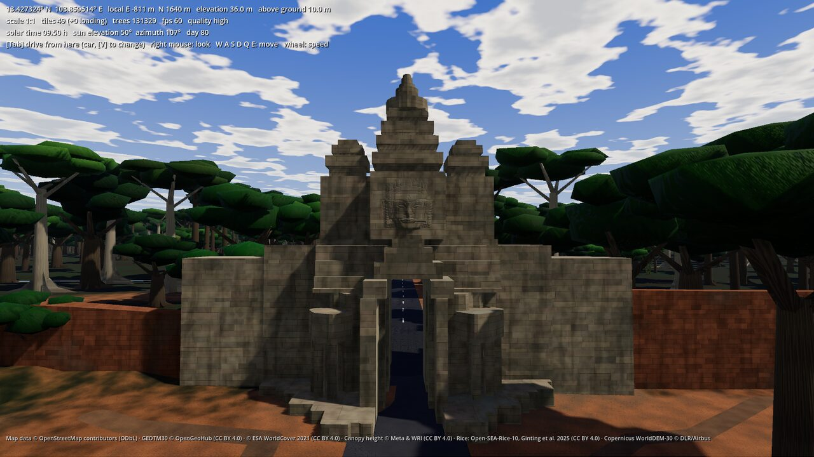
On the pageSur la pageនៅលើទំព័រ 
On the pageSur la pageនៅលើទំព័រ 
On the pageSur la pageនៅលើទំព័រ 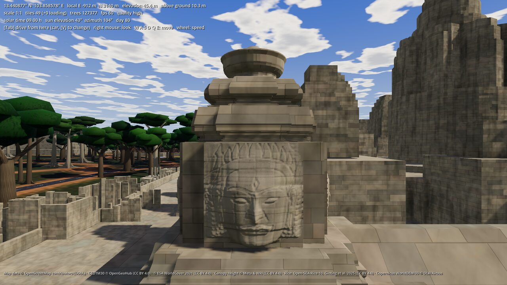
On the pageSur la pageនៅលើទំព័រ 
On the pageSur la pageនៅលើទំព័រ 
On the pageSur la pageនៅលើទំព័រ 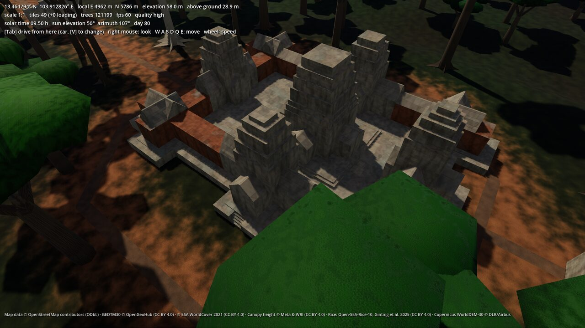
On the pageSur la pageនៅលើទំព័រ -
In development, and followedEn développement, et suiviកំពុងអភិវឌ្ឍ និងតាមដាន
Angkor World Engine moves to the new In development section of the home page, with the date of its last push read live from GitHub. Its Last changes now run to 21 November; the four oldest summaries leave the page and are kept below.
Angkor World Engine passe dans la nouvelle section En développement de l’accueil, avec la date de son dernier envoi lue en direct sur GitHub. Ses derniers changements vont désormais jusqu’au 21 novembre ; les quatre résumés les plus anciens quittent la page et sont gardés ci-dessous.
Angkor World Engine ផ្លាស់ទៅផ្នែកថ្មី «កំពុងអភិវឌ្ឍ» នៃទំព័រដើម ជាមួយកាលបរិច្ឆេទនៃការបញ្ជូនចុងក្រោយរបស់វា ដែលអានផ្ទាល់ពី GitHub។ ការផ្លាស់ប្តូរចុងក្រោយរបស់វា ឥឡូវនេះរហូតដល់ថ្ងៃទី 21 ខែវិច្ឆិកា។ សេចក្តីសង្ខេបចាស់ជាងគេទាំងបួន ចេញពីទំព័រ ហើយត្រូវបានរក្សាទុកខាងក្រោម។
Taken off the page’s Last changes, kept hereSortis des derniers changements de la page, gardés iciដកចេញពីការផ្លាស់ប្តូរចុងក្រោយនៃទំព័រ រក្សាទុកនៅទីនេះ- Siem Reap’s old quarter and the towns
The colonial quarter round the Old Market is drawn as published sources describe it: two-storey shophouses in white, pastel or brighter renovated colours under shared terracotta tiled roofs, with colonnaded galleries opening in arches, balconies, and round-headed windows with louvred shutters. The Old Market is a one-floor hall, the Grand Hotel d’Angkor has four floors under a hipped tiled roof, and the quarter’s restaurants and bars put tables out on the pavement. Across the towns, shophouses now line only the main roads and named streets; the 17,915 buildings inside the blocks are two-storey detached houses.
- The Bayon from its survey drawings
The Bayon now has a model built from the EFEO’s drawings: the 108 written spot heights of its levelling plan set each platform and court at its level, and a 1/50 axial section gives the towers, the central one 29.6 m above the sanctuary’s floor. It holds the central tower and the axial towers, the inner gallery’s sixteen towers and the twelve towers of the courts, the outer gallery’s 375 free-standing pillars, the axial stairs, the outer gopuras with their porches, stairs and walls, the four corner pavilions and the two libraries. The towers’ faces are not modelled yet.
- Angkor Wat, part by part
Angkor Wat rebuilt from the EFEO’s survey drawings: the central massif, the second level, the gallery of the bas-reliefs, the west entrance and the causeways, and the fourth enclosure with its north and south gopuras, its stone drawn to the measured sizes of its courses. The last additions are the cloister’s stair halls with their piers and stepped roofs. Automated checks now catch flights hidden in the stone or blocked at their foot, pillars that carry nothing and roofs that rest on nothing; 40 flights were cleared at their foot.
- Modelled vehicles, traffic and weather
The world is now built at 1:1 everywhere. The car, two-wheelers, auto-rickshaw and remorque are modelled, with their drivers, riders and passengers and speedometers that work, and traffic drives the roads round the player, two-wheelers leaning into bends and vehicles taking turns at junctions. Clouds and their shadows, rain rings on water, spray from the wheels, street and vehicle lamps, road markings, pavements, bridges and the everyday objects of streets and villages were added.
- Le vieux quartier de Siem Reap et les villes
Le quartier colonial autour du Vieux Marché est dessiné tel que le décrivent les sources publiées : compartiments à deux niveaux, blancs, pastel ou repeints de couleurs vives, sous des toits de tuiles en terre cuite partagés, avec galeries à colonnes ouvertes en arcs, balcons et hautes fenêtres cintrées à persiennes. Le Vieux Marché est une halle de plain-pied, le Grand Hotel d’Angkor compte quatre niveaux sous un toit de tuiles à croupes, et les restaurants et bars du quartier sortent leurs tables sur le trottoir. Dans les villes, les compartiments ne bordent plus que les grands axes et les rues nommées ; les 17 915 bâtiments du cœur des îlots sont devenus des maisons individuelles à deux niveaux.
- Le Bayon d’après ses relevés
Le Bayon a désormais un modèle tiré des dessins de l’EFEO : les 108 cotes écrites de son plan de nivellement placent chaque terrasse et chaque cour à sa hauteur, et une coupe axiale au 1/50 donne les tours, la tour centrale à 29,6 m au-dessus du sol du sanctuaire. On y trouve la tour centrale et les tours axiales, les seize tours de la galerie intérieure et les douze tours des cours, les 375 piliers isolés de la galerie extérieure, les escaliers axiaux, les gopuras extérieurs avec leurs porches, leurs escaliers et leurs murs, les quatre pavillons d’angle et les deux bibliothèques. Les visages des tours ne sont pas encore modélisés.
- Angkor Vat, partie par partie
Angkor Vat reconstruit d’après les relevés de l’EFEO : le massif central, le deuxième niveau, la galerie des bas-reliefs, l’entrée ouest et les chaussées, et la quatrième enceinte avec ses gopuras nord et sud, la pierre dessinée aux dimensions mesurées de ses assises. Derniers ajouts : les salles d’escalier du cloître, avec leurs piles et leurs toits en gradins. Des contrôles automatiques repèrent désormais les volées enfouies dans la pierre ou bloquées à leur pied, les piliers qui ne portent rien et les toits qui ne reposent sur rien ; 40 volées ont été dégagées à leur pied.
- Véhicules modélisés, circulation et météo
Le monde est désormais construit à l’échelle 1:1 partout. La voiture, les deux-roues, le tricycle motorisé et la remorque sont modélisés, avec conducteurs, pilotes et passagers et des compteurs de vitesse qui fonctionnent, et une circulation parcourt les routes autour du joueur : les deux-roues se penchent dans les virages, les véhicules passent chacun leur tour aux carrefours. S’y ajoutent les nuages et leurs ombres, les ronds de pluie sur l’eau, les gerbes d’eau derrière les roues, les réverbères et les feux des véhicules, le marquage au sol, les trottoirs, les ponts et les objets du quotidien des rues et des villages.
- សង្កាត់ចាស់ក្រុងសៀមរាប និងទីក្រុងនានា
សង្កាត់សម័យអាណានិគម នៅជុំវិញផ្សារចាស់ ត្រូវបានគូរតាមការពិពណ៌នានៃឯកសារដែលបានបោះពុម្ព៖ ផ្ទះល្វែងពីរជាន់ ពណ៌ស ពណ៌ស្រាល ឬពណ៌ភ្លឺៗ ដែលទើបជួសជុល ក្រោមដំបូលក្បឿងដីដុតរួមគ្នា ជាមួយច្រកដើរមានសសរ ដែលបើកជាក្លោងធ្នូ យ៉ និងបង្អួចខ្ពស់ក្បាលមូល មានស្លឹកបង្អួចជាបន្ទះៗ។ ផ្សារចាស់ ជាសាលមួយជាន់ សណ្ឋាគារ Grand Hotel d’Angkor មានបួនជាន់ ក្រោមដំបូលក្បឿងជម្រាលបួនទិស ហើយភោជនីយដ្ឋាន និងបារនៃសង្កាត់នេះ ដាក់តុនៅលើចិញ្ចើមផ្លូវ។ នៅក្នុងទីក្រុងនានា ឥឡូវផ្ទះល្វែងមានតែតាមបណ្តោយផ្លូវធំៗ និងផ្លូវដែលមានឈ្មោះប៉ុណ្ណោះ ហើយអគារ 17 915 នៅខាងក្នុងប្លុក បានក្លាយជាផ្ទះពីរជាន់ដាច់ដោយឡែក។
- ប្រាសាទបាយ័ន ពីប្លង់វាស់វែងរបស់វា
ឥឡូវនេះ ប្រាសាទបាយ័នមានគំរូ ដែលសាងសង់ពីប្លង់របស់ EFEO៖ ចំណុចកម្ពស់ដែលសរសេរ 108 នៃប្លង់វាស់កម្ពស់របស់វា កំណត់កម្រិតនៃរាន និងទីធ្លានីមួយៗ ហើយផ្នែកកាត់តាមអ័ក្ស មាត្រដ្ឋាន 1/50 ផ្តល់កំពូលទាំងឡាយ ដែលកំពូលកណ្តាលមានកម្ពស់ 29.6 ម៉ែត្រ ពីលើកម្រាលនៃប្រាសាទកណ្តាល។ គំរូនេះមាន៖ កំពូលកណ្តាល និងកំពូលតាមអ័ក្ស កំពូលដប់ប្រាំមួយនៃរោងខាងក្នុង និងកំពូលដប់ពីរនៃទីធ្លា សសរឈរដាច់ដោយឡែក 375 នៃរោងខាងក្រៅ ជណ្តើរតាមអ័ក្ស ខ្លោងទ្វារខាងក្រៅ ជាមួយរានហាល ជណ្តើរ និងជញ្ជាំងរបស់វា អាគារនៅជ្រុងទាំងបួន និងបណ្ណាល័យទាំងពីរ។ ព្រះភក្ត្រនៅលើកំពូល មិនទាន់មាននៅក្នុងគំរូនៅឡើយទេ។
- អង្គរវត្ត មួយផ្នែកម្តងៗ
ប្រាសាទអង្គរវត្ត ត្រូវបានសាងសង់ឡើងវិញពីប្លង់វាស់វែងរបស់ EFEO៖ តួប្រាសាទកណ្តាល ជាន់ទីពីរ រោងចម្លាក់ ច្រកចូលខាងលិច និងផ្លូវថ្ម និងកំពែងទីបួន ជាមួយខ្លោងទ្វារខាងជើង និងខាងត្បូង ដោយថ្មត្រូវបានគូរតាមទំហំស្រទាប់ថ្មដែលបានវាស់។ ការបន្ថែមចុងក្រោយ គឺសាលជណ្តើរនៃព្រះពាន់ ជាមួយសសរទ្រ និងដំបូលជាថ្នាក់ៗ។ ការត្រួតពិនិត្យស្វ័យប្រវត្តិ ឥឡូវរកឃើញជណ្តើរដែលលាក់ក្នុងថ្ម ឬត្រូវបានរាំងនៅជើង សសរដែលមិនទ្រអ្វី និងដំបូលដែលមិនសង្កត់លើអ្វី ហើយជណ្តើរ 40 ត្រូវបានដោះការរាំងនៅជើងរបស់វា។
- គំរូយានយន្ត ចរាចរណ៍ និងអាកាសធាតុ
ឥឡូវនេះ ពិភពលោកត្រូវបានសាងសង់តាមមាត្រដ្ឋាន 1:1 គ្រប់ទីកន្លែង។ រថយន្ត ម៉ូតូ ម៉ូតូស្កូទ័រ រ៉ឺម៉កកង់បី និងរ៉ឺម៉កខ្មែរ មានគំរូរបស់វា ជាមួយអ្នកបើកបរ អ្នកជិះ អ្នកដំណើរ និងនាឡិកាល្បឿនដែលដំណើរការ ហើយចរាចរណ៍បើកបរនៅលើផ្លូវជុំវិញអ្នកលេង ដោយម៉ូតូផ្អៀងពេលបត់ និងយានយន្តផ្លាស់វេនគ្នានៅផ្លូវប្រសព្វ។ ពពក និងស្រមោលរបស់វា រង្វង់ភ្លៀងលើទឹក ទឹកខ្ទាតពីកង់ ចង្កៀងផ្លូវ និងចង្កៀងយានយន្ត គំនូសសញ្ញាលើផ្លូវ ចិញ្ចើមផ្លូវ ស្ពាន និងវត្ថុប្រចាំថ្ងៃតាមផ្លូវ និងក្នុងភូមិ ក៏ត្រូវបានបន្ថែមផងដែរ។
-
Twelve temples, traffic and townsDouze temples, circulation et villesប្រាសាទដប់ពីរ ចរាចរណ៍ និងទីក្រុង
The page catches up with the repository: twelve temples modelled, traffic, the towns, and where the prototype stands.
La page rattrape le dépôt : douze temples modélisés, la circulation, les villes, et l’état du prototype.
ទំព័រនេះធ្វើបច្ចុប្បន្នភាពតាម repository៖ ប្រាសាទដប់ពីរដែលមានគំរូ ចរាចរណ៍ ទីក្រុង និងស្ថានភាពនៃគំរូសាកល្បង។
-
Last changesDerniers changementsការផ្លាស់ប្តូរចុងក្រោយ
The page now ends with a summary of the repository’s latest commits, in English, French and Khmer.
La page se termine désormais par un résumé des derniers commits du dépôt, en anglais, en français et en khmer.
ឥឡូវនេះ ទំព័របញ្ចប់ដោយសេចក្តីសង្ខេបនៃ commit ចុងក្រោយរបស់ repository ជាភាសាអង់គ្លេស បារាំង និងខ្មែរ។
-
Angkor Wat from the EFEO’s drawingsAngkor Vat d’après les relevés de l’EFEOអង្គរវត្ត ពីប្លង់របស់ EFEO
Angkor Wat rebuilt from the survey drawings of the École française d’Extrême-Orient, the automated temple checks, nine captures and a new cover. The central tower is 57.4 m on the drawings, not 65 m.
Angkor Vat reconstruit d’après les relevés de l’École française d’Extrême-Orient, les contrôles automatiques des temples, neuf captures et une nouvelle image de couverture. La tour centrale mesure 57,4 m sur les relevés, et non 65 m.
អង្គរវត្តត្រូវបានសាងសង់ឡើងវិញពីប្លង់វាស់វែងរបស់ École française d’Extrême-Orient ការត្រួតពិនិត្យប្រាសាទដោយស្វ័យប្រវត្តិ រូបថតអេក្រង់ប្រាំបួន និងរូបគម្របថ្មី។ ប្រាង្គកណ្តាលមានកម្ពស់ 57.4 ម៉ែត្រ នៅលើប្លង់ មិនមែន 65 ម៉ែត្រទេ។
10 captures10 capturesរូបថតអេក្រង់ 10
On the pageSur la pageនៅលើទំព័រ 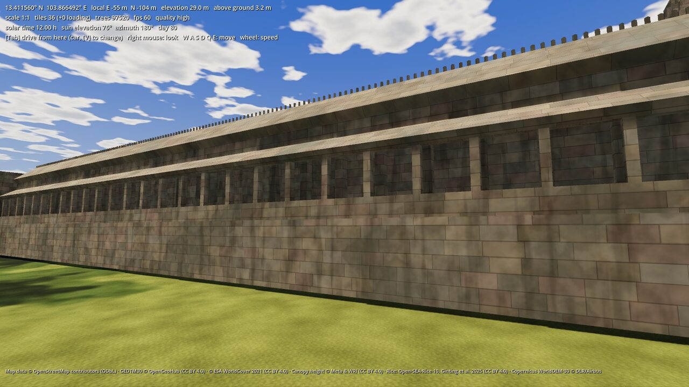
On the pageSur la pageនៅលើទំព័រ 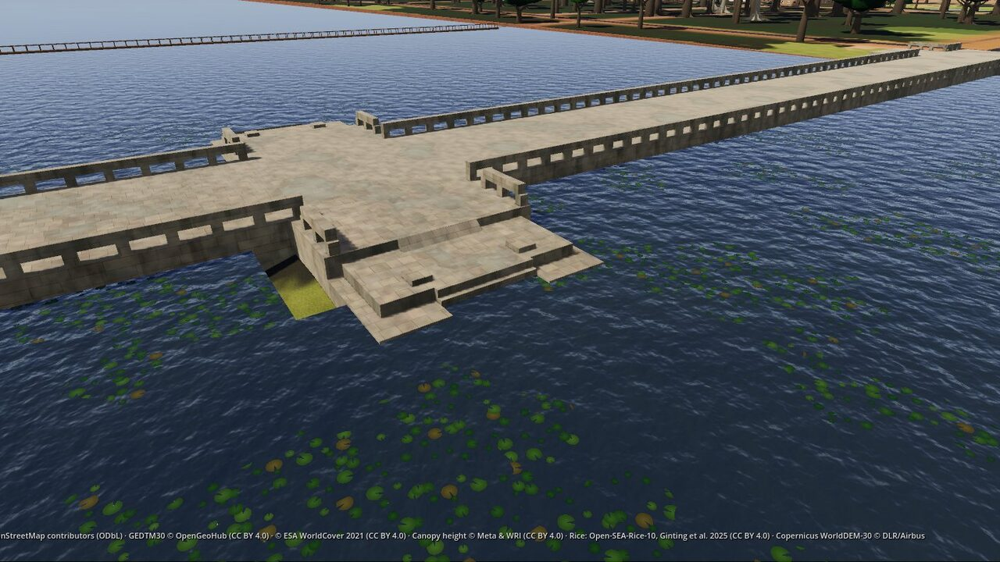
On the pageSur la pageនៅលើទំព័រ 
On the pageSur la pageនៅលើទំព័រ 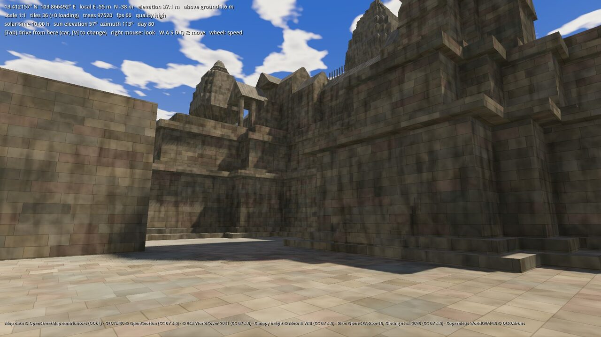
On the pageSur la pageនៅលើទំព័រ 
On the pageSur la pageនៅលើទំព័រ 
On the pageSur la pageនៅលើទំព័រ 
On the pageSur la pageនៅលើទំព័រ 
On the pageSur la pageនៅលើទំព័រ 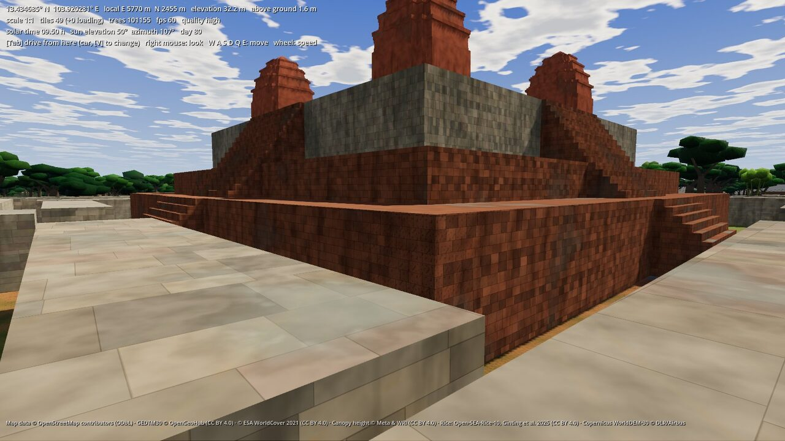
On the pageSur la pageនៅលើទំព័រ -
Its own pageSa propre pageទំព័រផ្ទាល់ខ្លួន
Angkor World Engine gets its page: the Angkor region rebuilt at 1:1 from open geographic data, nothing placed by hand; its layers and their sources, the 37 × 45 km region streamed, nine temple models, five vehicles from real figures, weather and night, the geographic editor, the Galaxy A56 measurements, and fourteen screenshots.
Angkor World Engine reçoit sa page : la région d’Angkor reconstruite à l’échelle 1:1 à partir de données géographiques ouvertes, sans rien placer à la main ; ses couches et leurs sources, la région de 37 × 45 km chargée à la volée, neuf temples modélisés, cinq véhicules aux caractéristiques réelles, la météo et la nuit, l’éditeur géographique, les mesures sur Galaxy A56 et quatorze captures.
Angkor World Engine ទទួលបានទំព័ររបស់ខ្លួន៖ តំបន់អង្គរ ដែលបង្កើតឡើងវិញតាមមាត្រដ្ឋាន 1:1 ពីទិន្នន័យភូមិសាស្ត្របើកចំហ ដោយគ្មានអ្វីដាក់ដោយដៃ។ ស្រទាប់ និងប្រភពរបស់វា តំបន់ 37 × 45 គីឡូម៉ែត្រ ដែលផ្ទុកបន្តិចម្តងៗ គំរូប្រាសាទប្រាំបួន យានយន្តប្រាំតាមតួលេខពិត អាកាសធាតុ និងពេលយប់ កម្មវិធីកែសម្រួលភូមិសាស្ត្រ ការវាស់វែងលើ Galaxy A56 និងរូបថតអេក្រង់ដប់បួន។
16 captures16 capturesរូបថតអេក្រង់ 16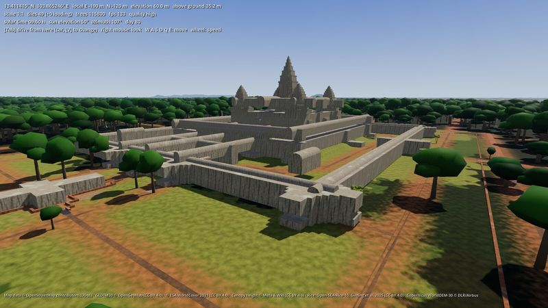
Replaced on 19 Nov 2026Remplacée le 19 nov. 2026ត្រូវបានជំនួស 19 វិច្ឆិកា 2026 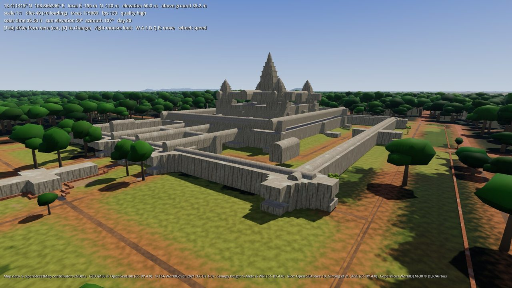
Removed on 19 Nov 2026Retirée le 19 nov. 2026ត្រូវបានដកចេញ 19 វិច្ឆិកា 2026 
On the pageSur la pageនៅលើទំព័រ 
On the pageSur la pageនៅលើទំព័រ 
On the pageSur la pageនៅលើទំព័រ 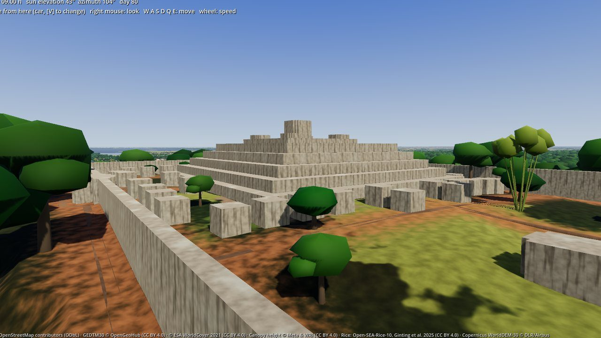
On the pageSur la pageនៅលើទំព័រ 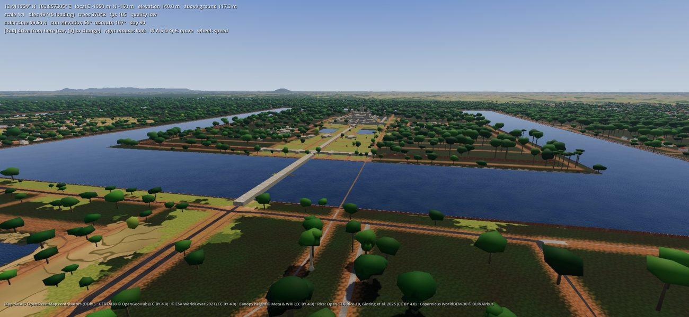
On the pageSur la pageនៅលើទំព័រ 
On the pageSur la pageនៅលើទំព័រ 
On the pageSur la pageនៅលើទំព័រ 
On the pageSur la pageនៅលើទំព័រ 
On the pageSur la pageនៅលើទំព័រ 
On the pageSur la pageនៅលើទំព័រ 
On the pageSur la pageនៅលើទំព័រ 
On the pageSur la pageនៅលើទំព័រ 
On the pageSur la pageនៅលើទំព័រ 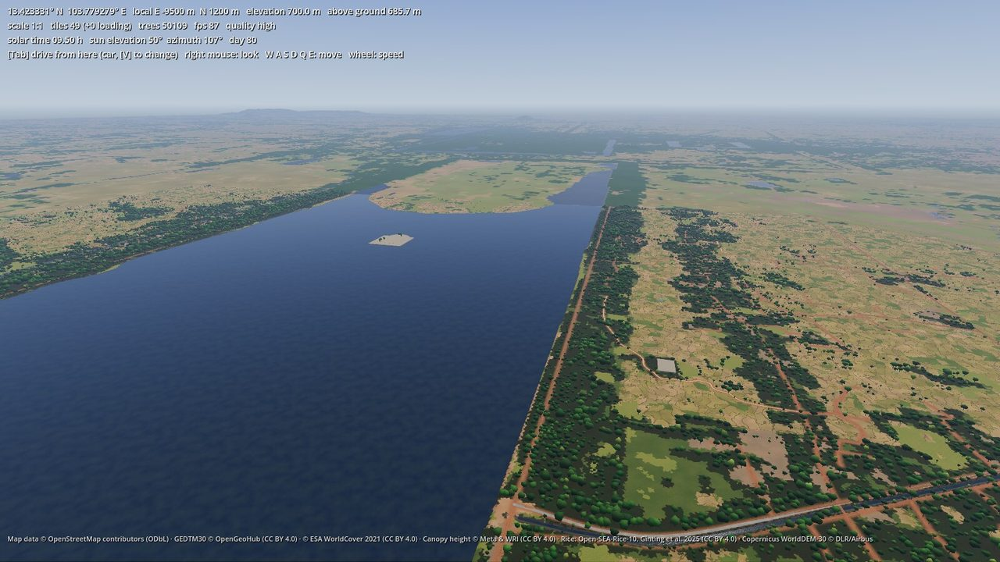
On the pageSur la pageនៅលើទំព័រ